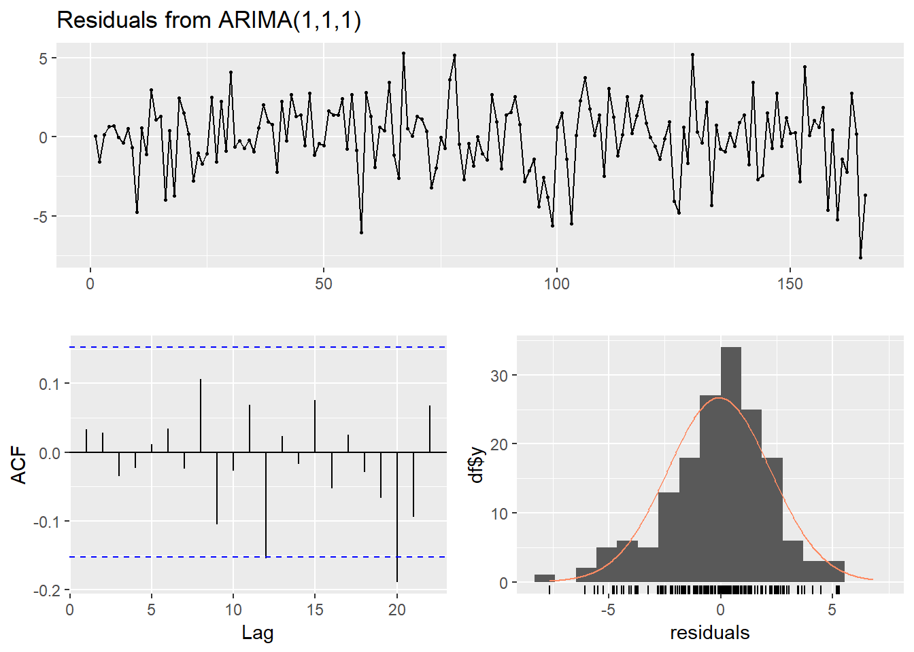

Bab 4 Pemodelan
library(forecast)
library(TSA)4.1 Analisis intervensi untuk data mingguan
4.1.1 COVID
Secara umum metode pemulusan cukup buruk dalam meramal harga minyak saat COVID dan perang Rusia-Ukraina. Oleh karena itu, coba ambil data saat COVID terlebih dahulu. Jika dilihat dari tabel di bawah, harga minyak mulai turun pada minggu kesembilan 2020 (28 Februari 2020), dan tetap turun. Oleh karena itu, ambil dua titik data awal dari penurunan tersebut (28 Februari dan 06 Februari) untuk menandakan intervensi tersebut, lalu coba ramal titik-titik selanjutnya.
knitr::kable(weeklyCrude[160:170])| Week | Date | Close | Dist | 6DW | 8DW | 2017 - Siklik | Awal 2018 - harga naik | Akhir 2018 - harga turun | Pra-COVID | COVID | Pemulihan | Vaksin, Varian | 2022 |
|---|---|---|---|---|---|---|---|---|---|---|---|---|---|
| 2020-W04 | 2020-01-24 | 54.19 | 7 days | 0 | 0 | FALSE | FALSE | FALSE | TRUE | FALSE | FALSE | Lainnya | Lainnya |
| 2020-W05 | 2020-01-31 | 51.56 | 7 days | 0 | 0 | FALSE | FALSE | FALSE | TRUE | FALSE | FALSE | Lainnya | Lainnya |
| 2020-W06 | 2020-02-07 | 50.32 | 7 days | 0 | 0 | FALSE | FALSE | FALSE | FALSE | TRUE | FALSE | Lainnya | Lainnya |
| 2020-W07 | 2020-02-14 | 52.05 | 7 days | 0 | 0 | FALSE | FALSE | FALSE | FALSE | TRUE | FALSE | Lainnya | Lainnya |
| 2020-W08 | 2020-02-21 | 53.38 | 7 days | 0 | 0 | FALSE | FALSE | FALSE | FALSE | TRUE | FALSE | Lainnya | Lainnya |
| 2020-W09 | 2020-02-28 | 44.76 | 7 days | 0 | 0 | FALSE | FALSE | FALSE | FALSE | TRUE | FALSE | Lainnya | Lainnya |
| 2020-W10 | 2020-03-06 | 41.28 | 7 days | 0 | 0 | FALSE | FALSE | FALSE | FALSE | TRUE | FALSE | Lainnya | Lainnya |
| 2020-W11 | 2020-03-13 | 31.73 | 7 days | 0 | 0 | FALSE | FALSE | FALSE | FALSE | TRUE | FALSE | Lainnya | Lainnya |
| 2020-W12 | 2020-03-20 | 22.43 | 7 days | 0 | 0 | FALSE | FALSE | FALSE | FALSE | TRUE | FALSE | Lainnya | Lainnya |
| 2020-W13 | 2020-03-27 | 21.51 | 7 days | 0 | 0 | FALSE | FALSE | FALSE | FALSE | TRUE | FALSE | Lainnya | Lainnya |
| 2020-W14 | 2020-04-03 | 28.34 | 7 days | 0 | 0 | FALSE | FALSE | FALSE | FALSE | TRUE | FALSE | Lainnya | Lainnya |
Ambil semua data sampai 6 Maret 2020 (observasi ke-166) sebagai data latih. Titik intervensi COVID yang diambil adalah 28 Februari (observasi ke-166)
wcrude.covid<-subset(weeklyCrude, Date<=as.Date("2020-04-13"))
wcrude.train<-subset(wcrude.covid, Date<=as.Date("2020-03-06"))Model Arima terbaik adalah \(ARIMA(1,1,1)\) - note, ini cari sendiri aja
covArima<-Arima(wcrude.train$Close,
order=c(1,1,1),
method="ML")Diagnostik model sebenarnya cukup oke:
checkresiduals(covArima)
##
## Ljung-Box test
##
## data: Residuals from ARIMA(1,1,1)
## Q* = 5.0142, df = 8, p-value = 0.7561
##
## Model df: 2. Total lags used: 10Tapi prediksi model tidak sesuai dengan apa yang akan terjadi. Bandingkan prediksi untuk 2 minggu saja:
forcdef<-forecast(covArima,5)
wcrude.covid[,`:=`("fitted.def"=c(forcdef$fitted,rep(NA,5)),
"predicted.def"=c(rep(NA,166),forcdef$mean))]
ggplot(aes(x=Date,y=Close),data=wcrude.covid[150:168])+
geom_point(size=3, alpha=0.3, color="gray")+
geom_line(aes(y=fitted.def,color="Fitted"))+
geom_line(aes(y=predicted.def,color="Prediksi"))+
geom_point(aes(y=predicted.def,color="Prediksi"), size=3,alpha=0.3)+
scale_color_manual(name='Prediksi ARIMA',
breaks=c('Fitted', 'Prediksi'),
values=c('Fitted'='black', 'Prediksi'='#DB0000'))+
theme_minimal()## Warning: Removed 2 row(s) containing missing values (geom_path).## Warning: Removed 17 row(s) containing missing values (geom_path).## Warning: Removed 17 rows containing missing values (geom_point).Tentu prediksi tersebut cukup buruk. Lakukan pemodelan ARIMAX dengan sebuah fungsi transfer. Pada dasarnya kita akan membuat suatu peubah dummy pada 28 Februari 2020 untuk menandakan reaksi pasar terhadap COVID. Lalu akan dimodelkan dengan suatu fungsi:
\[ m_t=\frac{(\theta_0+\theta_1B+...+\theta_{q-1}B^{q-1})}{(1-\phi_1 B -...-\phi_p B^p)} P_t \]
Dengan: \[ \begin{aligned} m_t&=\text{ Pengaruh intervensi (COVID) di waktu ke-t}\\ Z_t&=\begin{cases} 1, & t=165 \text{ (28 Februari 2020, mulai COVID)}\\ 0, &\text{lainnya}\\ \end{cases}\\ \end{aligned} \]
Salah satu model paling sederhana adalah dengan \(AR(1)\) - pada dasarnya model intervensi akan menjadi:
\[ \begin{aligned} m_t&=\frac{\theta_0}{(1-\phi_1 B)} P_t\\ (1-\phi_1B)m_t&=\theta_0P_t\\ m_t-\phi_1m_{t-1}&=\theta_0P_t\\ m_t&=\theta_0P_t+\phi_1m_{t-1} \end{aligned} \]
Saat \(P_{t}=1\), tentu \(P_{t-1}=0\), \(m_{t-2}=0\) (intervensi belum memiliki efek). Oleh karena itu dapat dilihat bahwa di waktu intervensi ke-r:
\[ \begin{aligned} m_r&=\theta_0\\ m_{r+1}&=\theta_0\cdot0+\phi_1m_{r}=\phi_1\theta_0\\ m_{r+2}&=\theta_0\cdot0+\phi_1m_{r+1}=\phi_1^2\theta_0\\ \end{aligned} \]
Dan seterusnya. Saat \(\phi_1<0\), fungsi ini menandakan suatu efek yang lama-kelamaan mengalami decay. Coba modelkan fungsi yang ada dengan metode tersebut:
intvmod<-arimax(wcrude.train$Close, order=c(1,1,1),
xtransf=data.frame(COVID=1*(seq(nrow(wcrude.train))==165)),
transfer=list(c(1,0)))
intvmod##
## Call:
## arimax(x = wcrude.train$Close, order = c(1, 1, 1), xtransf = data.frame(COVID = 1 *
## (seq(nrow(wcrude.train)) == 165)), transfer = list(c(1, 0)))
##
## Coefficients:
## ar1 ma1 COVID-AR1 COVID-MA0
## -0.8990 0.9625 1.5199 -7.9141
## s.e. 0.0594 0.0388 0.3160 2.2452
##
## sigma^2 estimated as 4.819: log likelihood = -363.99, aic = 735.98Terlihat bahwa AIC model dengan intervensi lebih baik
knitr::kable(
cbind(c("Tanpa Intervensi","Intervensi"),
c(covArima$aic,intvmod$aic)),
col.names=c("Model","AIC")
)| Model | AIC |
|---|---|
| Tanpa Intervensi | 748.606798472797 |
| Intervensi | 735.979604802578 |
Begitu juga akurasinya:
compAcc<-rbind(accuracy(covArima),accuracy(intvmod))
rownames(compAcc)<-c("Tanpa Intervensi","Intervensi")
knitr::kable(
compAcc,
row.names=T,
digits =4
)| ME | RMSE | MAE | MPE | MAPE | MASE | ACF1 | |
|---|---|---|---|---|---|---|---|
| Tanpa Intervensi | -0.0744 | 2.2868 | 1.7466 | -0.2395 | 3.1249 | 0.9709 | 0.0328 |
| Intervensi | -0.0054 | 2.1886 | 1.6826 | -0.0829 | 2.9732 | 0.9354 | 0.0287 |
Diagnostik residual juga oke:
checkresiduals(intvmod)
##
## Ljung-Box test
##
## data: Residuals from ARIMA(1,1,1)
## Q* = 5.8303, df = 6, p-value = 0.4425
##
## Model df: 4. Total lags used: 10Nampaknya di term intervensi \(AR(1)\) merupakan model terbaik:
arimax(wcrude.train$Close, order=c(1,1,1),
xtransf=data.frame(COVID=1*(seq(nrow(wcrude.train))==165)),
transfer=list(c(0,0)))##
## Call:
## arimax(x = wcrude.train$Close, order = c(1, 1, 1), xtransf = data.frame(COVID = 1 *
## (seq(nrow(wcrude.train)) == 165)), transfer = list(c(0, 0)))
##
## Coefficients:
## ar1 ma1 COVID-MA0
## -0.4994 0.6033 -2.5717
## s.e. 0.5154 0.4752 1.5625
##
## sigma^2 estimated as 5.273: log likelihood = -371.3, aic = 748.6AIC model intervensi \(MA(0)\) lebih tinggi. Model intervensi lain tidak dapat diduga dengan informasi yang ada:
arimax(wcrude.train$Close, order=c(1,1,1),
xtransf=data.frame(COVID=1*(seq(nrow(wcrude.train))==165)),
transfer=list(c(0,1)))## Error in optim(init[mask], armaCSS, method = "BFGS", hessian = FALSE, : initial value in 'vmmin' is not finitearimax(wcrude.train$Close, order=c(1,1,1),
xtransf=data.frame(COVID=1*(seq(nrow(wcrude.train))==165)),
transfer=list(c(1,1)))## Error in optim(init[mask], armaCSS, method = "BFGS", hessian = FALSE, : initial value in 'vmmin' is not finiteForecasting model intervensi ini cukup kompleks. Dapat digunakan fungsi filter di R untuk menduga efek dari intervensi tersebut:
m.earlyCOV<-stats::filter(1*(seq(nrow(wcrude.train)+5)==165),
filter=1.5199, "recursive")* -7.914Ini dapat diverifikasi dengan manual:
\[ \begin{aligned} m_r&=-7.9141\\ m_{r+1}&=\phi_1\theta_0=1.5199\cdot -7.9141=-12.02864059\\ m_{r+2}&=\phi_1^2\theta_0=1.5199^{2}\cdot7.9141=-18.28233083\\ m_{r+3}&=\phi_1^3\theta_0=1.5199^{3}\cdot7.9141=-27.78731\\ \end{aligned} \]
Lalu, hasil dari filter akan dimasukkan sebagai regressor di fungsi Arima yang dimiliki package forecast
intv.mod<-Arima(wcrude.train$Close, order=c(1,1,1),
xreg=m.earlyCOV[1:166])
intv.mod## Series: wcrude.train$Close
## Regression with ARIMA(1,1,1) errors
##
## Coefficients:
## ar1 ma1 xreg
## -0.8992 0.9626 1.0000
## s.e. 0.0592 0.0385 0.2538
##
## sigma^2 = 4.908: log likelihood = -363.99
## AIC=735.98 AICc=736.23 BIC=748.4Terlihat bahwa koefisien COVID sama dengan satu, sehingga sebenarnya akan diregresikan nilai-nilai \(m_{t}\) yang telah ditemukan saja. Lakukan pendugaan:
forcinv<-forecast(intv.mod,5,xreg=m.earlyCOV[167:171])Dan plot. Awalnya, duga sebanyak 2 periode saja:
wcrude.covid[,`:=`("fitted.intv"=c(forcinv$fitted,rep(NA,5)),
"predicted.intv"=c(rep(NA,166),forcinv$mean))]
ggplot(aes(x=Date,y=Close),data=wcrude.covid[150:168])+
geom_point(size=3, alpha=0.3, color="gray")+
geom_line(aes(y=fitted.intv,color="Fitted"))+
geom_line(aes(y=predicted.intv,color="Prediksi"))+
geom_point(aes(y=predicted.intv,color="Prediksi"),size=3,alpha=0.3)+
scale_color_manual(name='Prediksi ARIMA',
breaks=c('Fitted', 'Prediksi'),
values=c('Fitted'='black', 'Prediksi'='#DB0000'))+
theme_minimal()## Warning: Removed 2 row(s) containing missing values (geom_path).## Warning: Removed 17 row(s) containing missing values (geom_path).## Warning: Removed 17 rows containing missing values (geom_point).Namun, model ini tidak cocok untuk peramalan jangka panjang. Jika dilakukan peramalan dengan durasi sebulan (4 minggu), dugaan akan sangat jauh dari aktual. Fakta ini dapat dilihat dari plot:
ggplot(aes(x=Date,y=Close),data=wcrude.covid[150:170])+
geom_point(size=3, alpha=0.3, color="gray")+
geom_line(aes(y=fitted.intv,color="Fitted"))+
geom_line(aes(y=predicted.intv,color="Prediksi"))+
geom_point(aes(y=predicted.intv,color="Prediksi"),size=3,alpha=0.3)+
scale_color_manual(name='Prediksi ARIMA',
breaks=c('Fitted', 'Prediksi'),
values=c('Fitted'='black', 'Prediksi'='#DB0000'))+
theme_minimal()## Warning: Removed 4 row(s) containing missing values (geom_path).## Warning: Removed 17 row(s) containing missing values (geom_path).## Warning: Removed 17 rows containing missing values (geom_point).Ini terjadi karena kita tidak mengetahui cerita dari intervensi tersebut secara sepenuhnya. Terakhir, bandingkan error testing, pertama untuk prediksi dua periode ke depan:
compAcc<-rbind(accuracy(wcrude.covid$Close[1:168],
wcrude.covid$predicted.def[1:168]),
accuracy(wcrude.covid$Close[1:168],
wcrude.covid$predicted.intv[1:168]))
rownames(compAcc)<-c("Tanpa Intervensi","Intervensi")
knitr::kable(
compAcc,
row.names=T,
digits =4
)| ME | RMSE | MAE | MPE | MAPE | |
|---|---|---|---|---|---|
| Tanpa Intervensi | 13.9157 | 14.7441 | 13.9157 | 33.8807 | 33.8807 |
| Intervensi | 2.8801 | 2.8843 | 2.8801 | 9.9138 | 9.9138 |
Dan untuk lima periode ke depan:
compAcc<-rbind(accuracy(wcrude.covid$Close,
wcrude.covid$predicted.def),
accuracy(wcrude.covid$Close,
wcrude.covid$predicted.intv))
rownames(compAcc)<-c("Tanpa Intervensi","Intervensi")
knitr::kable(
compAcc,
row.names=T,
digits =4
)| ME | RMSE | MAE | MPE | MAPE | |
|---|---|---|---|---|---|
| Tanpa Intervensi | 15.6177 | 16.1276 | 15.6177 | 38.1101 | 38.1101 |
| Intervensi | -22.4012 | 35.3207 | 24.7053 | 84.9935 | 126.4934 |
Jelas bahwa secara jangka pendek (dua minggu), model dengan intervensi lebih baik daripada model tanpa intervensi.
4.1.2 COVID rebuilding
Analisis intervensi juga berguna untuk pemodelan data setelah efek intervensi habis, misal saat harga minyak naik kembali setelah COVID. Ambil data sampai akhir 2020:
wcrude.rebuild1<-subset(weeklyCrude,Date<=as.Date("2020-12-31"))Plot data tersebut:
ggplot(aes(x=Date,y=Close),data=wcrude.rebuild1[160:209,])+
geom_point(size=3, alpha=0.6, color="gray")+theme_minimal()
Ambil data sapai Juni 2020 sebagai data latih. Secara umum, rebuilding terjadi setelah harga sangat rendah di sekitar Mei 2020, sehingga saat Juni 2020 sudah terjadi sedikit kenaikan harga minyak:
wcrude.train2<-subset(weeklyCrude,Date<=as.Date("2020-05-21"))(Inset model step here) menunjukkan bahwa Arima(0,1,1) model terbaik:
diff2<-diff(wcrude.train2$Close,1)
acf(diff2)pacf(diff2)eacf(diff2)## AR/MA
## 0 1 2 3 4 5 6 7 8 9 10 11 12 13
## 0 x o o o o o o o o o o o o o
## 1 o o o o o o o o o o o o o o
## 2 x o o o o o o o o o o o o o
## 3 x x o o o o o o o o o o o o
## 4 x o x x o o o o o o o o o o
## 5 x x x x x o o o o o o o o o
## 6 o o x x x o o o o o o o o o
## 7 x o x x o x o o o o o o o oIntinya setelah dicoba \(ARIMA(0,1,1)\) oke:
rebuildMod<-Arima(wcrude.train2$Close,order=c(0,1,1))
rebuildMod## Series: wcrude.train2$Close
## ARIMA(0,1,1)
##
## Coefficients:
## ma1
## 0.1961
## s.e. 0.0746
##
## sigma^2 = 6.799: log likelihood = -415.55
## AIC=835.11 AICc=835.18 BIC=841.44Tren naik kembali tidak dapat diprediksi.
forcdef.reb<-forecast(rebuildMod,33)
wcrude.rebuild1[,`:=`("fitted.def"=c(forcdef.reb$fitted,rep(NA,33)),
"predicted.def"=c(rep(NA,176),forcdef.reb$mean))]
ggplot(aes(x=Date,y=Close),data=wcrude.rebuild1[150:185])+
geom_point(size=3, alpha=0.3, color="gray")+
geom_line(aes(y=fitted.def,color="Fitted"))+
geom_line(aes(y=predicted.def,color="Prediksi"))+
geom_point(aes(y=predicted.def,color="Prediksi"), size=3, alpha=.3)+
scale_color_manual(name='Prediksi ARIMA',
breaks=c('Fitted', 'Prediksi'),
values=c('Fitted'='black', 'Prediksi'='#DB0000'))+
theme_minimal()## Warning: Removed 9 row(s) containing missing values (geom_path).## Warning: Removed 27 row(s) containing missing values (geom_path).## Warning: Removed 27 rows containing missing values (geom_point).Dapat dicoba berbagai spesifikasi model arimax. Pertama akan dicobakan spesifikasi arimax sebelumnya, yaitu AR saja. Koefisien MA lalu ditingkatkan sampai 3, lalu dicobakan cara (Cryer dan Chan 2008), yaitu membuat dua peubah untuk memisahkan efek langsung dari COVID dan efek yang secara eksponen turun. Efek langsung dimodelkan dengan MA dan efek turun dimodelkan dengan AR.
arimaxdef<-arimax(wcrude.train2$Close,order=c(1,1,0),
xtransf=data.frame(COVID=1*(seq(nrow(wcrude.train2))==165)),
transfer=list(c(1,0)))
arimaxmad1<-arimax(wcrude.train2$Close,order=c(1,1,0),
xtransf=data.frame(COVID=1*(seq(nrow(wcrude.train2))==165)),
transfer=list(c(1,1)))
arimaxmad2<-arimax(wcrude.train2$Close,order=c(1,1,0),
xtransf=data.frame(COVID=1*(seq(nrow(wcrude.train2))==165)),
transfer=list(c(1,2)))
arimaxmad3<-arimax(wcrude.train2$Close,order=c(1,1,0),
xtransf=data.frame(COVID=1*(seq(nrow(wcrude.train2))==165)),
transfer=list(c(1,3)))
arimaxd1<-arimax(wcrude.train2$Close,order=c(1,1,0),
xtransf=data.frame(COVID=1*(seq(nrow(wcrude.train2))==165),
COVIDb=1*(seq(nrow(wcrude.train2))==165)),
transfer=list(c(0,1),c(1,0)))
arimaxd2<-arimax(wcrude.train2$Close,order=c(1,1,0),
xtransf=data.frame(COVID=1*(seq(nrow(wcrude.train2))==165),
COVIDb=1*(seq(nrow(wcrude.train2))==165)),
transfer=list(c(0,2),c(1,0)))Bandingkan AIC tiap spesifikasi model tersebut:
knitr::kables(list(
knitr::kable(arimaxdef$aic,col.names="Intervensi AR(1)"),
knitr::kable(cbind(arimaxmad1$aic,arimaxmad2$aic,arimaxmad3$aic),
col.names=c("ARMA(1,1)","ARMA(1,2)","MA(1,3)")),
knitr::kable(cbind(arimaxd1$aic,arimaxd2$aic),col.names=c("MA(1)+AR(1)","MA(2)+AR(1)"))
)
)
|
|
|
Sehingga model terbaik adalah:
arimaxmad3##
## Call:
## arimax(x = wcrude.train2$Close, order = c(1, 1, 0), xtransf = data.frame(COVID = 1 *
## (seq(nrow(wcrude.train2)) == 165)), transfer = list(c(1, 3)))
##
## Coefficients:
## ar1 COVID-AR1 COVID-MA0 COVID-MA1 COVID-MA2 COVID-MA3
## 0.0857 0.9605 -8.4711 -4.4471 -10.6113 -10.6437
## s.e. 0.0767 0.0243 2.3488 2.3693 2.3759 2.3828
##
## sigma^2 estimated as 5.537: log likelihood = -391.25, aic = 794.5Terlihat bahwa semua koefisien lebih besar dari galat baku, sehingga kemungkinan signifikan. Residual kedua model tampak oke:
checkresiduals(rebuildMod)##
## Ljung-Box test
##
## data: Residuals from ARIMA(0,1,1)
## Q* = 5.6654, df = 9, p-value = 0.7729
##
## Model df: 1. Total lags used: 10checkresiduals(arimaxmad3)
##
## Ljung-Box test
##
## data: Residuals from ARIMA(1,1,0)
## Q* = 5.5843, df = 4, p-value = 0.2324
##
## Model df: 6. Total lags used: 10Perhatikan spesifikasi model tersebut secara matematis:
\[ \begin{aligned} m_t&=\frac{(\theta_0+\theta_1B+\theta_2B^2+\theta_3B^3)}{(1-\phi_1 B)} P_t\\ (1-\phi_1B)m_t&=\theta_0P_t+\theta_1P_{t-1}+\theta_2P_{t-2}+\theta_3P_{t-3}\\ m_t-\phi_1m_{t-1}&=\theta_0P_t+\theta_1P_{t-1}+\theta_2P_{t-2}+\theta_3P_{t-3}\\ m_t&=\theta_0P_t+\theta_1P_{t-1}+\theta_2P_{t-2}+\theta_3P_{t-3}+\phi_1m_{t-1}\\ \end{aligned} \]
Sama seperti sebelumnya, untuk forecasting nilai tersebut dapat dicari dengan fungsi filter:
COVID=1*(seq(nrow(wcrude.rebuild1))==165)
tss<-stats::filter(COVID,c(-8.4711, -4.4471, -10.6113, -10.6437),"convolution",sides=1)
tss[is.na(tss)]<-0
m<-stats::filter(tss,0.9605,"recursive",sides=1)
m[165:209]## [1] -8.471100 -12.583592 -22.697840 -32.444975 -31.163399 -29.932444 -28.750113 -27.614483 -26.523711 -25.476025 -24.469722
## [12] -23.503168 -22.574792 -21.683088 -20.826606 -20.003955 -19.213799 -18.454854 -17.725887 -17.025715 -16.353199 -15.707248
## [23] -15.086811 -14.490882 -13.918492 -13.368712 -12.840648 -12.333442 -11.846271 -11.378344 -10.928899 -10.497207 -10.082568
## [34] -9.684306 -9.301776 -8.934356 -8.581449 -8.242482 -7.916904 -7.604186 -7.303821 -7.015320 -6.738215 -6.472055
## [45] -6.216409Empat hasil hitungan pertama mirip dengan hitungan manual. Selanjutnya dapat dengan mudah diverifikasi dengan mengalikan dengan pangkat dari \(\phi_1\).
\[ \begin{aligned} m_{r}&=\theta_0&&=-8.4711 \\ m_{r+1}&=\theta_1+\phi_1\theta_0&=-4.4471+0.9605 \cdot -8.4711&=12.5835\\ m_{r+2}&=\theta_2+\phi_1m_{r+1}=\theta_2+\phi_1\theta_1+\phi_1^2\theta_0&=-10.6113+0.9605\cdot12.5835&=22.69775175\\ m_{r+3}&=\theta_3+\phi_1m_{r+2}=\theta_3+\phi_1\theta_2+\phi_1^2\theta_1+\phi_1^3\theta_0&=-10.6437+0.9605\cdot22.69775175&=32.44489057\\ m_{r+k}&=\phi_1^{k-3}m_{r+k-1}=\phi_1^{k-3}\theta_3+\phi_1^{k-2}\theta_2+\phi_1^{k-1}\theta_1+\phi_1^k\theta_0\\ \end{aligned} \]
(0.9605^(1:20))*-32.44489057## [1] -31.16332 -29.93237 -28.75004 -27.61441 -26.52364 -25.47596 -24.46966 -23.50311 -22.57473 -21.68303 -20.82655 -20.00390
## [13] -19.21375 -18.45481 -17.72584 -17.02567 -16.35316 -15.70721 -15.08677 -14.49084Gunakan fungsi Arima lalu prediksi:
rebuildModfin<-Arima(wcrude.train2$Close,order=c(1,1,0),
xreg=m[1:176])
rebuildModfin## Series: wcrude.train2$Close
## Regression with ARIMA(1,1,0) errors
##
## Coefficients:
## ar1 xreg
## 0.0850 0.9505
## s.e. 0.0758 0.1424
##
## sigma^2 = 5.519: log likelihood = -396.78
## AIC=799.57 AICc=799.71 BIC=809.06forc.inv.reb<-forecast(rebuildModfin,33,xreg=m[177:209])Dalam periode sama, dapat dilihat bahwa prediksi model ARIMAX lebih baik:
wcrude.rebuild1[,`:=`("fitted.intv"=c(forc.inv.reb$fitted,rep(NA,33)),
"predicted.intv"=c(rep(NA,176),forc.inv.reb$mean))]
ggplot(aes(x=Date,y=Close),data=wcrude.rebuild1[150:185])+
geom_point(size=3, alpha=0.3, color="gray")+
geom_line(aes(y=fitted.intv,color="Fitted"))+
geom_line(aes(y=predicted.intv,color="Prediksi"))+
geom_point(aes(y=predicted.intv,color="Prediksi"),size=3, alpha=0.3)+
scale_color_manual(name='Prediksi ARIMA',
breaks=c('Fitted', 'Prediksi'),
values=c('Fitted'='black', 'Prediksi'='#DB0000'))+
theme_minimal()## Warning: Removed 9 row(s) containing missing values (geom_path).## Warning: Removed 27 row(s) containing missing values (geom_path).## Warning: Removed 27 rows containing missing values (geom_point).Bahkan, jika diekspansi sampai akhir 2020, prediksi masih baik.
ggplot(aes(x=Date,y=Close),data=wcrude.rebuild1[150:209 ])+
geom_point(size=3, alpha=0.3, color="gray")+
geom_line(aes(y=fitted.intv,color="Fitted"))+
geom_line(aes(y=predicted.intv,color="Prediksi"))+
geom_point(aes(y=predicted.intv,color="Prediksi"),size=3, alpha=0.3)+
scale_color_manual(name='Prediksi ARIMA',
breaks=c('Fitted', 'Prediksi'),
values=c('Fitted'='black', 'Prediksi'='#DB0000'))+
theme_minimal()## Warning: Removed 33 row(s) containing missing values (geom_path).## Warning: Removed 27 row(s) containing missing values (geom_path).## Warning: Removed 27 rows containing missing values (geom_point).Dapat dibandingkan akurasi di training, peramalan 9 periode, dan peramalan 33 periode:
compAcc<-rbind(accuracy(rebuildMod),accuracy(arimaxmad3))
rownames(compAcc)<-c("Tanpa Intervensi","Intervensi")
compAcc.1<-rbind(accuracy(wcrude.rebuild1$Close[1:185],
wcrude.rebuild1$predicted.def[1:185]),
accuracy(wcrude.rebuild1$Close[1:185],
wcrude.rebuild1$predicted.intv[1:185]))
rownames(compAcc.1)<-c("Tanpa Intervensi","Intervensi")
compAcc.2<-rbind(accuracy(wcrude.rebuild1$Close[1:209],
wcrude.rebuild1$predicted.def[1:209]),
accuracy(wcrude.rebuild1$Close[1:209],
wcrude.rebuild1$predicted.intv[1:209]))
rownames(compAcc.2)<-c("Tanpa Intervensi","Intervensi")
knitr::kables(list(knitr::kable(compAcc,
row.names=T,
digits =4),
knitr::kable(compAcc.1,
row.names=T,
digits =4),
knitr::kable(compAcc.2,
row.names=T,
digits =4)),
)
|
|
|
Model dengan intervensi umumnya lebih baik.